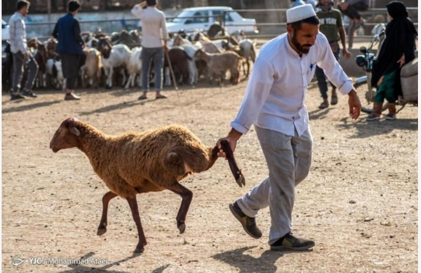
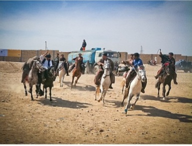
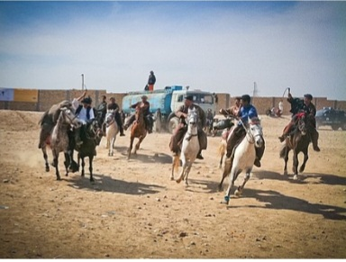

جشن نوروز
نوروز یکی از قدیمیترین جشنهای مردم جاغوری است. مردم خانههای خود را تمیز میکنند، لباس نو میپوشند و به دیدار اقوام میروند. پختن غذاهای سنتی، رفتن به گردشگاهها و بازیهای محلی از رسوم این جشن است.

جاغوری یکی از مناطق زیبا و فرهنگی افغانستان است که مردم آن جشنهای سنتی مختلفی مانند عید فطر، عید قربان و نوروز را با شور و شوق برگزار میکنند.
عید فطر پس از پایان ماه رمضان برگزار میشود. مردم پس از نماز عید، به دید و بازدید میروند و بزرگان را احترام میکنند.
در عید قربان، مردم قربانی میکنند و گوشت آن را بین خانواده، دوستان و نیازمندان تقسیم میکنند. این روز یکی از زیباترین روزهای همدلی است.
نوروز یکی از قدیمیترین جشنهای مردم جاغوری است. مردم خانههای خود را تمیز میکنند، لباس نو میپوشند و به دیدار اقوام میروند. پختن غذاهای سنتی، رفتن به گردشگاهها و بازیهای محلی از رسوم این جشن است.
 

"جشنها فرصتی برای شادی، همبستگی و یادآوری فرهنگ کهن ما هستند."